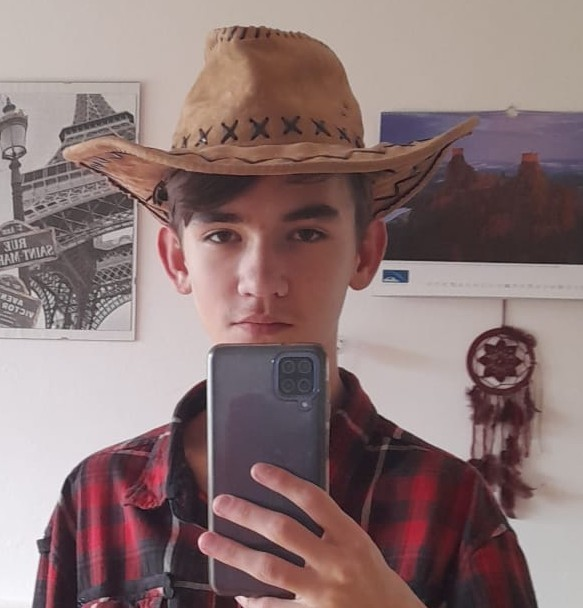
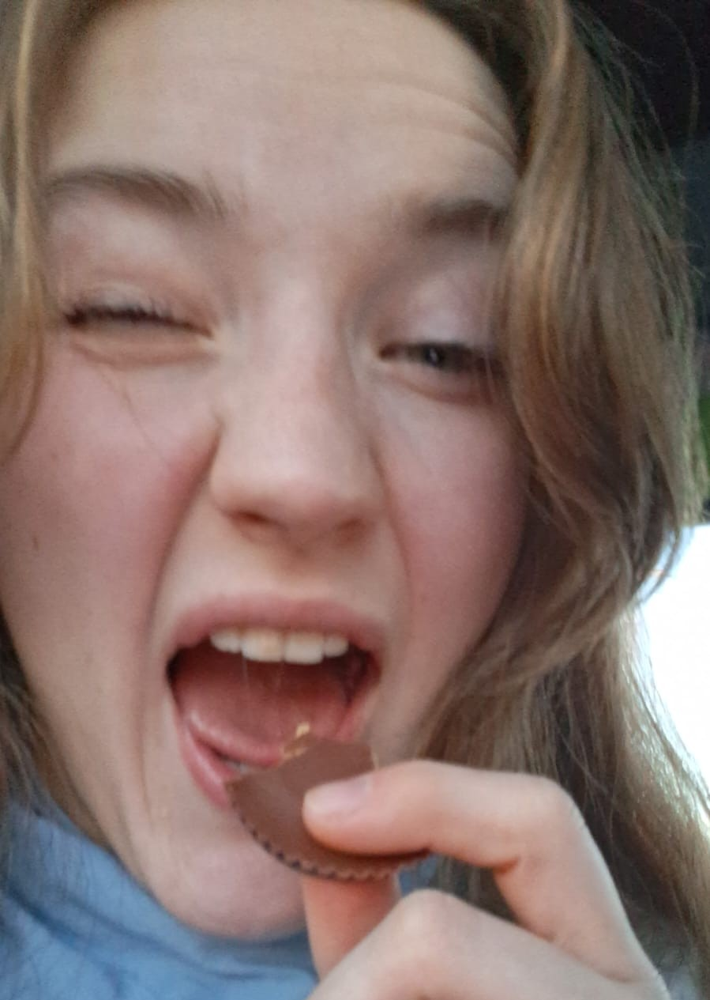
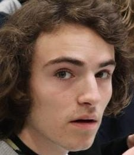
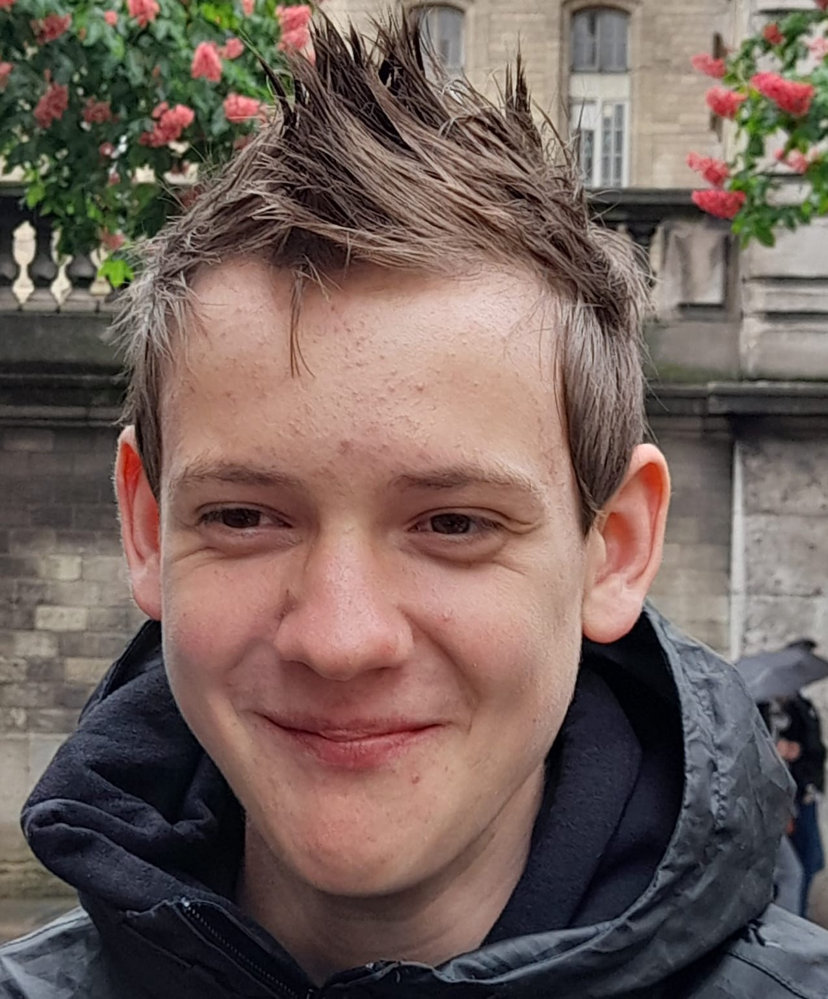
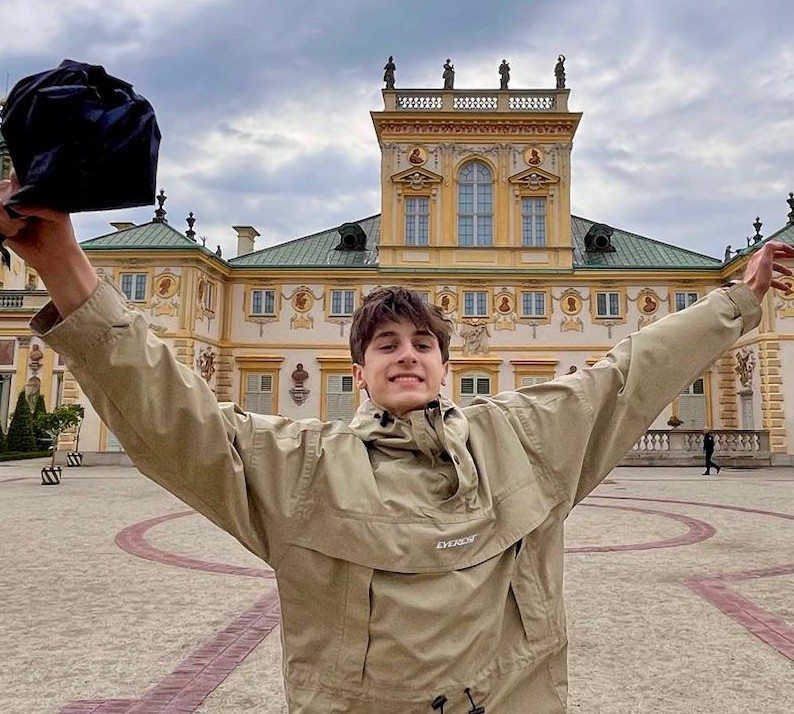

Tomík - Starosta
Ahoj, já jsem Tom a je mi 19 let. Studuji prvním rokem informatiku na Matfyzu a jsem z toho nadšený, každý nový den nabíjení vědomostí mě dělá neuvěřitelně šťastným. Mezi mé koníčky patří především hra na housle (mločímu publiku) či lezení (ostatním lidem na nervy). Rád se také věnuji programování, takže kdybyste potřebovali pomoc s praním triček podle barev, neváhejte se na mne obrátit. Poslední zajímavostí o mně je, že nejsem ani noční sova, ani ranní ptáče, nýbrž netopýr, který naspí klidně i 12 hodin denně.

Majda - Místostarostka
Čusík busík, jsem Majda, ale říkejte mi MJ (jako ze Spidermana). Nedávno jsem se stala vlakem. 8 let s matfyzáky ve třídě na mě zanechalo spoustu trvalých následků, včetně sebevygaslightění se do toho, že mě baví chemie. Kromě házení telefonů do záchoda mám spoustu jiných házecích koníčků, například házení rukama (elite ball reference) (jsem jenom trochu agresivní) a házení discgolfových disků. Taky dělám fakt dobrý sušenky, ale to je jen ragebait, ty na sousu nejspíš nebudou.

Jindra - Kuchtík
Čauky, já jsem Jindra ale kamarádi mi většinou říkají Henry, vzhledem k mojí podobě s Anglickým králem Jindřichem VIII. Spoustu let jsem strávil ve sboru se sirénami, kde jsme každé volné odpoledne vábili námořníky projíždějící kolem. Poté jsem ale zestárnul, a tak jsem se raději vydal na studium obecné matematiky. Minulý rok jsem prodělal nehezkou zlomeninu ruky. Pokud se mě na ní zeptáte, řeknu vám pravděpodobně nějakou trapnou historku se spolužákem, ve skutečnosti se mi to ale přihodilo při pádu do jámy, kterou jsem jinému kopal.

Viktor - Peněžník/kuchtík 2
Zdravím, mé jméno je Viktor. Moc rád si hraju s modelínou (hlavně s modrou, ta je moje oblíbená), k mému zklamání je ovšem obor matematické modelování o něčem docela jiném, ale i tak mě to docela baví. Rád hraju squash? Nebo je to padel? Nevim, prostě rád odpaluju raketou by se dalo říct asi. Kdybych si mohl na opuštěný ostrov vzít pouze 4 věci, byly by to: tužka, kružítko, papír a pravítko, to abych mohl celý ostrov znázornit v Mongeově promítání.

Matěj - Rozvrhář
Nazdárek, já jsem Matěj a je mi pouhých 18 let. Teprve včera se mi podařilo zbavit dudlíku. Často chodím běhat, protože se bojím zombie apokalypsy a není pro mě nic děsivějšího, než skončit se zombie kousancem, protože jako jedinej z party neudržím tempo 4:30 na kilák. Někdy si přijdu ve svém životě až moc šťastný, tak si jednou za čas zajdu na spartu na fotbal a hned se moje hladina radosti sníží. Taky se hodně nerad koukám na lidi, a tak se ve svém volném čase věnuji práci v Českém rozhlasu a tajně doufám v jeho comeback.